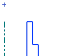
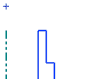

创建离点划线底部115毫米的点
点划线是沿着+Z 轴，长度为100 mm。
-
在 ZC 坐标输入框中，键入115并点击应用。
暂时先不要关闭点对话框。
-
点击视图工具条上的适合窗口
 按钮。
按钮。已在点划线顶部的上方创建一个点。

-
绕竖直屏幕轴旋转部件，查看点相对其它对象的位置。
检查新建的点，以确保它位于 XC-YC 平面上。
-
选择视图→操作→恢复。
点划线是沿着+Z 轴，长度为100 mm。
在 ZC 坐标输入框中，键入115并点击应用。
暂时先不要关闭点对话框。
点击视图工具条上的适合窗口 按钮。
按钮。
已在点划线顶部的上方创建一个点。

绕竖直屏幕轴旋转部件，查看点相对其它对象的位置。
检查新建的点，以确保它位于 XC-YC 平面上。
选择视图→操作→恢复。